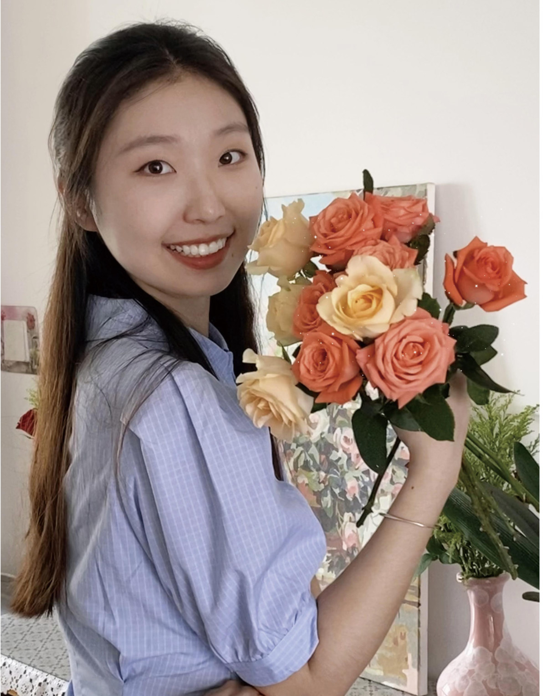

《人间烟火气》
基于继承传统文化视角下的智慧乡村活化设计
场地坐落于湖南隆回的瑶族古寨崇木凼村。设计以「烟火气」为线索，从激活产业、唤醒非遗、构建自然生态三个维度切入，让传统文化在村落肌理中自然生长，探寻智慧乡村的活化之路。
场地湖南省邵阳市隆回县崇木凼村

你好，我是王文畅，
一个愿意把图纸画进土地里的人。
2002 年生，天津人。本科毕业于湖南科技大学，现为北京农学院风景园林专业硕士研究生。四年的设计训练里，我触碰过乡村的烟火、公园的多巴胺、广场的疗愈，也动手改造过小建筑——从总图到节点，从建模到手绘。
我偏爱从场地本身的记忆出发：一棵古树、一段老墙、一句方言。让设计长在土地上，而不是落在纸面上，是我始终相信的事。
熟练技能
求学历程
六个作品，四段时光，
从一座村庄到一张钢笔画。
点击任意作品，可翻阅整套图纸 ↘
基于继承传统文化视角下的智慧乡村活化设计
场地坐落于湖南隆回的瑶族古寨崇木凼村。设计以「烟火气」为线索，从激活产业、唤醒非遗、构建自然生态三个维度切入，让传统文化在村落肌理中自然生长，探寻智慧乡村的活化之路。
场地湖南省邵阳市隆回县崇木凼村
“城市客厅”理念下的公园景观设计
以「城市客厅」为设计主旨，将场地划分为生态林地、儿童乐园、运动草坪、湿地科普等八个功能区。公园既与市民生活息息相关，也为城市发展赋能增彩，成为一处理想的城市共享客厅。
场地湖南省衡阳市陆家新区中心公园
以钟摆人群为主的疗愈型广场景观设计
聚焦每日穿梭于城市两端的「钟摆青年」，以复合疗法、活力运动、唤醒精神记忆与人际交流四大策略，在南京和平广场营造一处可以安放情绪、释放压力的疗愈性城市广场。
场地江苏省南京市和平广场
郴州市安仁神乐园农家乐建筑改造
以预制轻钢为骨架、三面玻璃为表皮，将室外绿意引入室内。建筑与环境相互交融，延续原材料与可持续原则，为安仁神乐园的农家乐注入新的生命力。
场地湖南省郴州市安仁县
湖南科技大学校园改造
于校园水体之南置入一座「镜之建筑」——大面积玻璃映照水色天光；场地内设休憩大棚与梯地广场，让身处其中的人们在自然里收获舒适与自在，呼应主题「境」。
场地湖南省湘潭市湖南科技大学
景观快题设计与建筑钢笔画
从景观快题到建筑钢笔画，以笔尖记录一草一木。手绘是最初的语言，也是设计路上始终携带的行囊。
纸本马克笔 · 针管笔